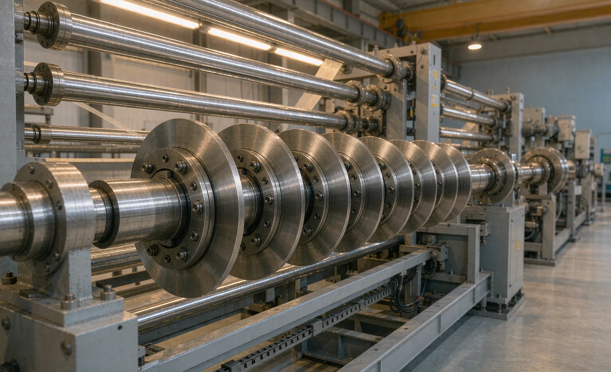
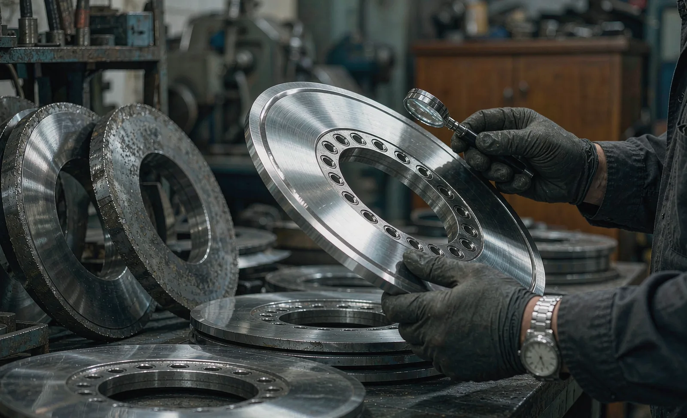

Published September 18, 2026 | By HDPTH Technical Editorial Team

Knives are the smallest line item on a slitter rewinder quotation and one of the largest in its operating budget. Blade purchases, regrinding, changeover labor and the quality losses caused by worn edges accumulate quietly across thousands of operating hours. Buyers who compare machines on price and speed but not on knife economics discover the difference later — usually as fuzz complaints, dust problems or an unexpectedly large annual blade invoice. This guide shows how to put knife life into the specification, and how to model consumables cost before signing.
What actually determines knife life
Four factors dominate, and three of them are yours, not the vendor’s. First, material abrasiveness: fillers such as calcium carbonate and titanium dioxide, glass fiber, and mineral-coated or dense calendered nonwovens cut tool life dramatically. Second, speed and tension, which multiply wear through heat in the cutting zone. Third, the number of lanes and web thickness — total cutting work per meter. Fourth, the knife system itself: razor, shear or score, blade material and coating, and holder rigidity and precision. The same razor blade that runs a full shift on light spunlace may need changing within hours on a filled composite. This is why knife life claims made on the vendor’s demo material are nearly meaningless — the commitment must be tested on yours. For the mechanics of each method, see razor, shear and score slitting.
Building the cost-per-slit model
The model is simple arithmetic; the discipline is forcing real numbers into it. For each knife system on offer, calculate:
- Blade cost per cycle: razor blades are disposable (blade price per edge); shear and score knives are regrindable (regrind price per cycle, plus amortized blade cost over total cycles).
- Cycles per blade: regrindable knives have a defined grinding allowance — ask how many regrinds each blade tolerates before geometry or balance is lost.
- Change time per event: minutes per lane change multiplied by lanes, plus the cost of a restart roll. This is where automatic blade positioning and changing earns its price — it attacks the labor and downtime half of the equation.
- Annual volume: kilometers slit per year multiplied by lanes, divided by kilometers per cycle, gives blades-in-use per year.
Divide total annual knife cost — blades, regrinds, change labor, buffer stock — by annual slit kilometers, and you have cost per slit-kilometer. Rank offers on that figure plus machine price, and the picture usually changes from the brochure ranking.
| Cost element | Razor slitting | Shear slitting | Score slitting |
|---|---|---|---|
| Blade spend pattern | Disposable per edge; high volume, low unit price | Regrindable; low volume, per-cycle regrind cost | Regrindable; anvil band wear adds a second wear item |
| Dominant life driver | Material abrasiveness, blade coating | Overlap and clearance discipline, holder rigidity | Anvil groove wear, web mineral content |
| Changeover exposure | Per edge, frequent — favors automation | Per regrind cycle, less frequent | Per regrind cycle plus band replacement |
| Hidden costs to price | Dust generation, disposal, stock variety | Sharpening logistics, geometry control | Anvil band stock, noise attenuation |
What to write into the offer
The knife specification worth contracting contains four commitments. First, a life number with test conditions: “on material X at speed Y with Z lanes, edge quality and dust remain within agreed limits for at least N kilometers per regrind (or per razor edge)”, demonstrated at FAT on your material. Second, a complete knife parts list with part numbers, so you are never captive to one supply channel — compare this with the warranty and spare parts framework you should apply machine-wide. Third, a first-fill spares quantity sized to your production plan. Fourth, regrind limits and the factory edge geometry, so any sharpening restores the cutting condition instead of drifting away from it. Vendors who volunteer these numbers are telling you something about how they build machines; vendors who resist are telling you something too.
Sharpening strategy: in-house, outsourced, or designed out
In-house sharpening pays back at higher lane counts and regrind volumes — but only with a dedicated grinder, a trained hand and a geometry gauge, because inconsistent edges destroy more value than the outsourcing premium saves. Outsourcing suits lower volumes and buyers who prefer a predictable per-blade price; its hidden costs are freight, lead time and buffer stock. The third option is designing the problem down: automatic knife systems reduce change frequency, and correct clearance and overlap practice extends every cycle. Model all realistic options before choosing — the ranking often shifts between sites of different sizes.

Want knife economics in your next offer?
Send HDPTH your material range, lane counts, speeds and annual volume. We will quote a knife system with a written life commitment, complete spares list and a cost-per-slit calculation you can put beside any competing offer.
Submit Your Project InquiryQuestions to put to every vendor
- What knife life do you commit to on my most abrasive material, demonstrated how and at what speed?
- How many regrinds does each shear or score blade tolerate, and what is the factory edge geometry?
- What is the complete knife parts list with part numbers, and what first-fill quantity do you recommend?
- What is the change time per lane, and can the system be automated later without redesign?
- Which wear items on the knife system are excluded from warranty, and at what price?
Completing your machine specification?
Read our guides on knife sharpening, knife holder mounting and slit width tolerance to connect knife economics with the rest of your quality requirements.
Contact HDPTHFrequently asked questions
How long should slitter blades last?
There is no universal number: razor blades on nonwovens may run from a few hours to several shifts per edge, shear knives for days to weeks between regrinds, and score knives similarly, depending on material abrasiveness, speed, knife geometry and edge-quality limits. The buyer’s task is not to find a lifetime figure but to force the vendor to commit to a testable one — kilometers slit per regrind or per edge on your material at your speed — and to model cost per slit from that commitment.
Which material properties wear slitter knives fastest?
Abrasiveness is the dominant driver: fillers such as calcium carbonate and titanium dioxide, glass fiber, and mineral-coated or heavily calendered nonwovens cut tool life dramatically. Speed and tension multiply the effect through cutting-zone heat, while web thickness and number of lanes determine total cutting work per meter. Dusty hygiene materials accelerate wear indirectly by contaminating knife holders, so the same blade that runs a week on spunlace may need daily attention on filled composites.
Should we sharpen knives in-house or outsource?
In-house sharpening pays back when you run enough lanes and regrind cycles to keep a dedicated grinder busy and a trained person maintains consistent geometry; outsourcing pays for lower volumes, complex geometries or when quality consistency from a third party is more dependable. Model both: cost per regrind cycle in-house (equipment amortization, labor, geometry-control risk) versus outsourcing (price per blade per cycle, freight, lead time, buffer stock). Whatever you choose, the machine offer should specify the same factory edge geometry so regrinding restores, rather than changes, the cutting condition.
What knife life commitment should we ask the machine vendor for?
Ask for a written FAT demonstration on your material at your speed: a defined set of knives slitting a defined number of lanes for a defined length of web, after which edge quality and dust generation must still meet the agreed limits. Convert that result into kilometers per regrind and cost per slit. Also require the knife-part numbering, recommended spares list with first-fill quantities, and regrind limits — how much material can be ground away before geometry or balance is lost — in the offer, not after delivery.
How does knife cost compare with the cost of edge-quality defects?
Blades are almost always the cheaper side of the trade. Running knives past their economic life produces fuzz, dust, angled cuts and width drift — defects that surface as customer claims, roll rejections and downstream web breaks that cost far more per hour than a blade change. The practical rule: define an objective end-of-life signal (edge-quality trend, dust measurement or slit count) and change knives slightly before it, on schedule, rather than waiting for visible defects to force an unscheduled stop.
Sources
- OSHA: Machine guarding resources for moving webs, rollers and point-of-operation hazards
- UK HSE: Work equipment and machinery guidance — safe use and maintenance duties
- ISO 12100: Risk assessment and risk reduction
- ANSI B11 committee: safety requirements for machinery, including converting machinery